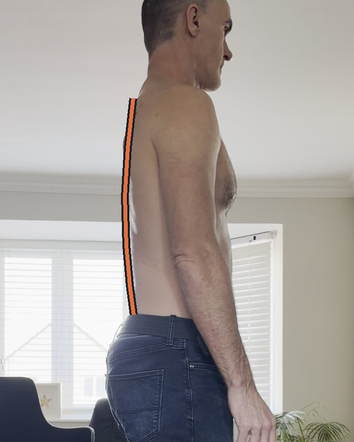

Series · 9 cues
Low-impact running
My spine can’t be the spring, so my legs have to be. Nine cues, each with its reel and the study behind it.
Read the deep dive →A flat back changes how you sit, run and lift, and most advice is written for a different spine. I’m testing what works on my own back and sharing the research behind it.

The Roussouly classification sorts spines into four shapes by the slope of the sacrum, the bone at the base of the spine. Most people have never been told theirs. Only an X-ray can confirm it, but the shapes are often visible side-on.
Low sacral slope. A long curve in the upper back and a short, low curve in the lower back.
Low sacral slope. Flat lower back and flat upper back: the flat back.
Medium sacral slope. A balanced S-curve: the shape most advice assumes.
High sacral slope. A long, deep curve in the lower back.
Source: Roussouly et al., Spine, 2005. Curious about yours? Have an X-ray or MRI? Try the spine-type check: your scan never leaves your device.
The full story behind each series: the mechanics, the studies and what I’ve found on my own back.
My spine can’t be the spring, so my legs have to be. Nine cues, each with its reel and the study behind it.
Read the deep dive →Why sitting brings on sciatica within minutes, why sitting up straight is pure muscle effort, and the search for a chair that holds the pelvis for you.
Read the deep dive →Training without heavy loads down the spine: the calf, hip and trunk work behind my running comeback.
Every study I use, summarised in plain English, linked to the original, and honest about its limits.
One flat back, tested honestly, setbacks included. Every result is n=1: a lead to explore, not proof.
Minutes until sciatica starts when sitting, with and without tape.
Leaning forward on my elbows: the one way I can sit for longer. Why I think it works.
A seat that frees the sit bones and the sciatic nerve path. The concept so far.
I’m Bruce. I have a flat back, a history of L5/S1 trouble and a lot of parkruns behind me. I’m not a clinician: I read the research, test it on myself and show my working.
Researchers and clinicians working on spinal shape: I’d love to help explain your work to the people it’s about. Message me on Instagram.
New cues and experiments go out on social first.
Instagram @theflatbackguy TikTok @theflatbackguy X @theflatbackguy